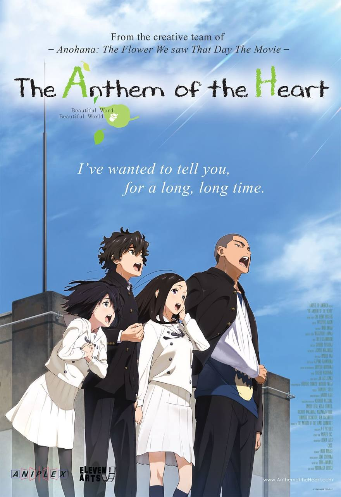
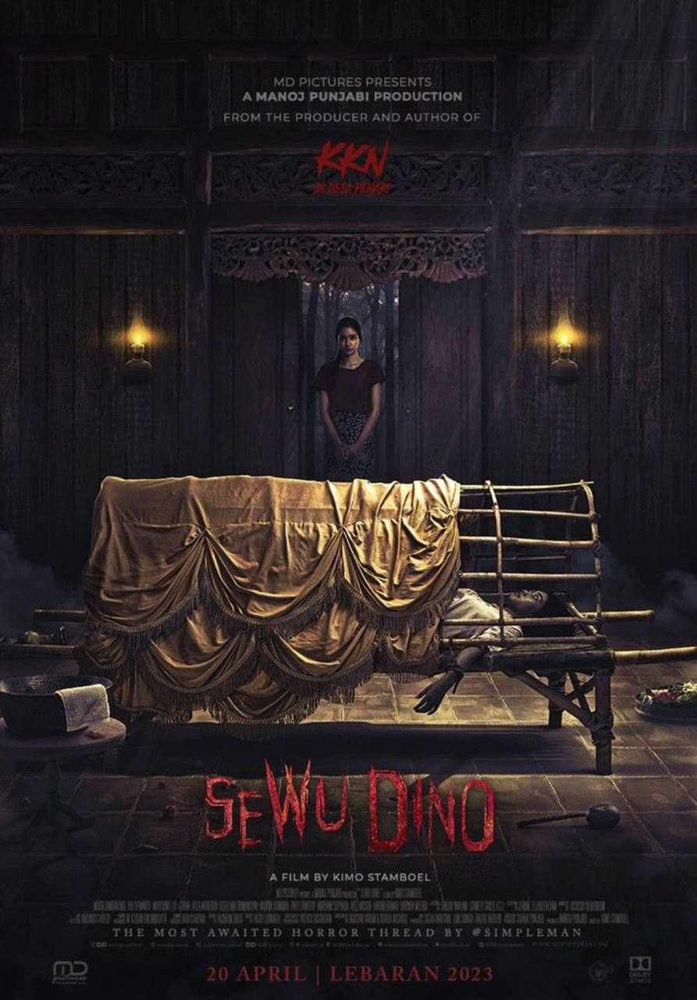
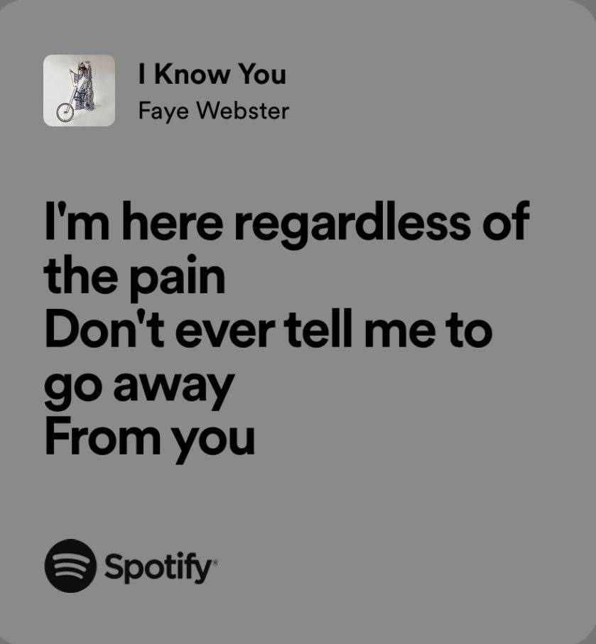
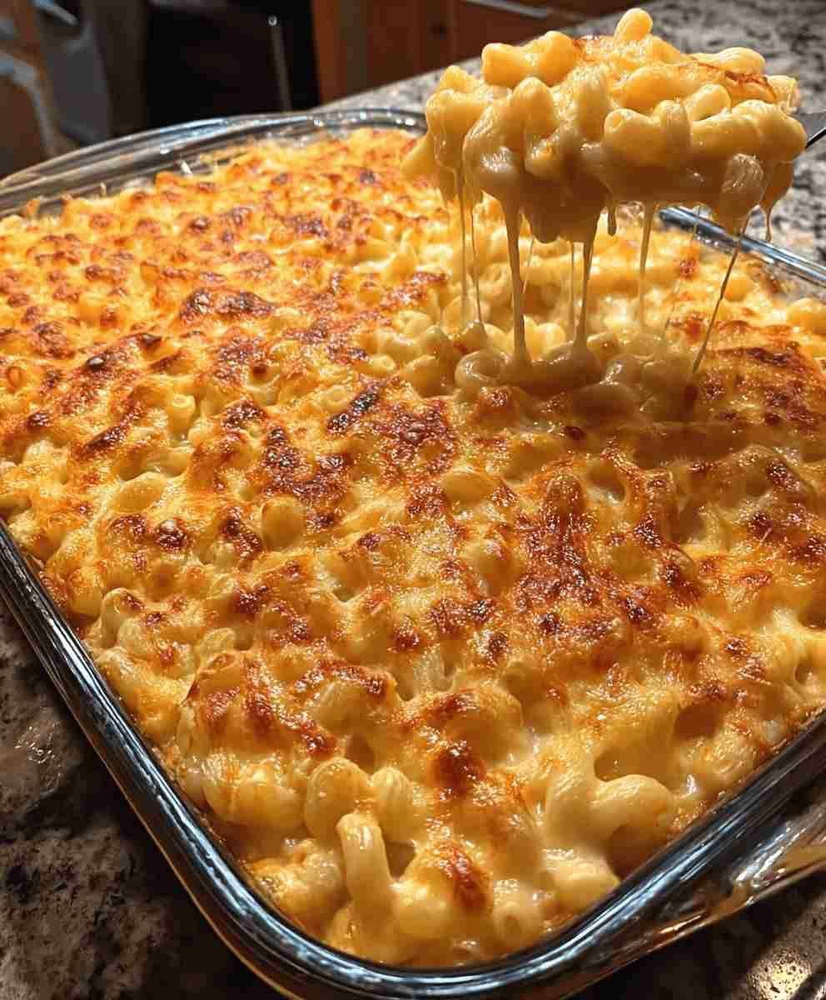
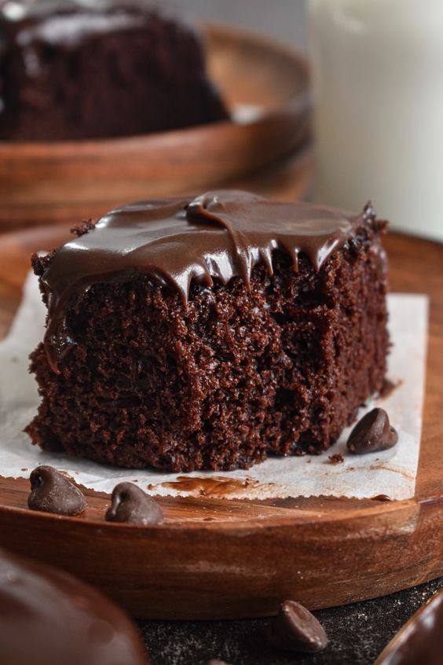

Favourite Movies
-  The Anthem of the Heart
-  Sewu Dino
- All the Bright Places
Favourite Music
-
No One Noticed- The Marias
-

I Know You- Faye Webster
Favourite Food
-
 Nasi Goreng Kampung
Nasi Goreng Kampung
-  Mac & Cheese
-  Chocolate Cake